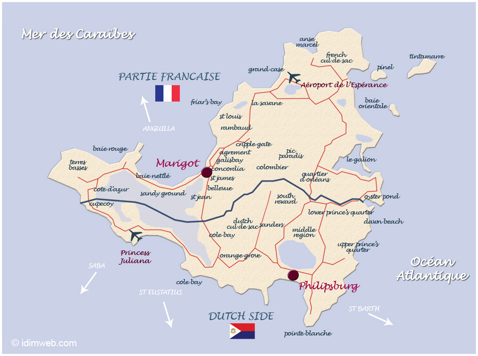
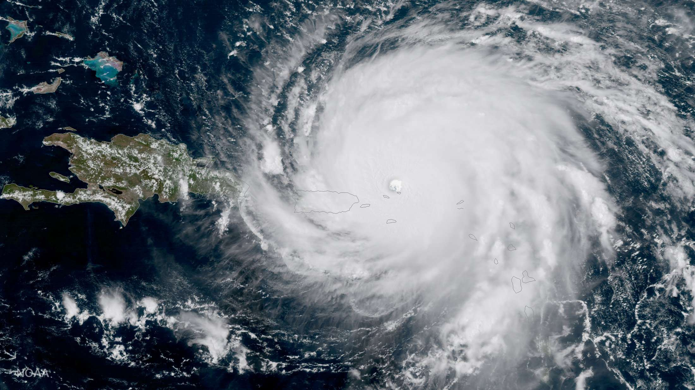

 Saint-Martin est un territoire français situé dans les Caraïbes, dans la partie nord de l’île de Saint-Martin,
dans les Antilles, portant le statut de collectivité d'outre-mer française depuis le 15 juillet 20071.
Avant cette date, elle faisait partie intégrante du département d'outre-mer de la Guadeloupe.
Son code officiel géographique (code Insee) est le 978 depuis le 1er janvier 2008.
Néanmoins, le code 97801 est utilisé par les applications nécessitant une codification sur cinq positions2.
Son code postal est cependant le 97150 (il n’a pas changé depuis la séparation de la Guadeloupe).
Ses habitants sont appelés les Saint-Martinois et la langue officielle est le français.
Néanmoins, du fait de la composante cosmopolite de l'île et de la forte influence nord américaine,
l'anglais est largement parlé et compris dans la partie française.
La partie sud de l’île, également appelée Saint-Martin (Sint Maarten en néerlandais), forme depuis
le 10 octobre 2010 un des quatre États du royaume des Pays-Bas ; la fédération des Antilles néerlandaises,
dont elle était l'une des cinq régions, a été dissoute à cette même date.
Le 5 septembre 2017, l'île est complètement ravagée par l'ouragan Irma.

L’ouragan Irma s'est développé du 29 août au 12 septembre 2017. Il est le dixième système tropical de la
saison cyclonique 2017 dans l'océan Atlantique nord et le deuxième ouragan majeur, catégorie 5, sur l'échelle
de Saffir-Simpson, après l'ouragan Harvey, catégorie 4, survenu une semaine auparavant. Il est un des ouragans
les plus puissants enregistré dans l'Atlantique nord depuis Hugo en 1989 et par la vitesse de ses vents soutenus
(295 km/h) depuis Allen en 1980. Il est aussi le premier ouragan à rester classé en catégorie 5 pendant une aussi
longue période continue5. Il cause des dégâts catastrophiques dans les îles de Barbuda, Saint-Barthélemy,
Saint-Martin, Anguilla et les Iles Vierges, éprouve durablement la cote nord de Cuba et oblige la Floride à mettre
en place une évacuation de plus de six millions d'habitants. Les dégâts sont évalués à plus de cent milliards de
dollars6.